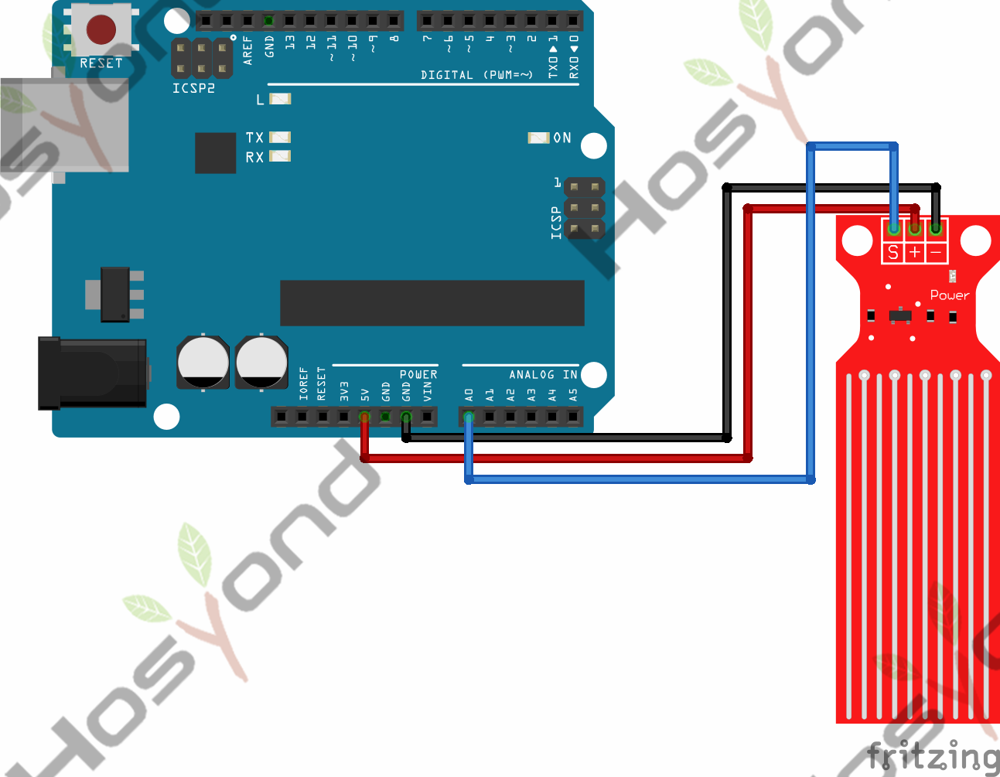

Project39.Water Level Sensor
Description
The sensor has ten exposed copper traces, five of which are power traces and the remaining five are sense traces. These traces are interlaced so that there is one sense trace between every two power traces.
Normally, power and sense traces are not connected, but when immersed in water, they are bridged.
There is a Power LED on the board, which will light up when the board is powered.
The power and sense traces form a variable resistor (much like a potentiometer) whose resistance varies based on how much they are exposed to water.
Specification
Working voltage: DC3-5V
Sensor type: simulation
Work current: less than 20mA
Detective area: 40mmx16mm
Work temperature: 10 ℃ -30 ℃
Connect
Code
// Sensor pins
// #define sensorPower 7
#define sensorPin A0
// Value for storing water level
int val = 0;
void setup() {
// Set D7 as an OUTPUT
// pinMode(sensorPower, OUTPUT);
// Set to LOW so no power flows through the sensor
// digitalWrite(sensorPower, LOW);
Serial.begin(9600);
}
void loop() {
//get the reading from the function below and print it
int level = readSensor();
Serial.print("Water level: ");
Serial.println(level);
delay(1000);
}
//This is a function used to get the reading
int readSensor() {
// digitalWrite(sensorPower, HIGH); // Turn the sensor ON
delay(10); // wait 10 milliseconds
val = analogRead(sensorPin); // Read the analog value form sensor
// digitalWrite(sensorPower, LOW); // Turn the sensor OFF
return val; // send current reading
}